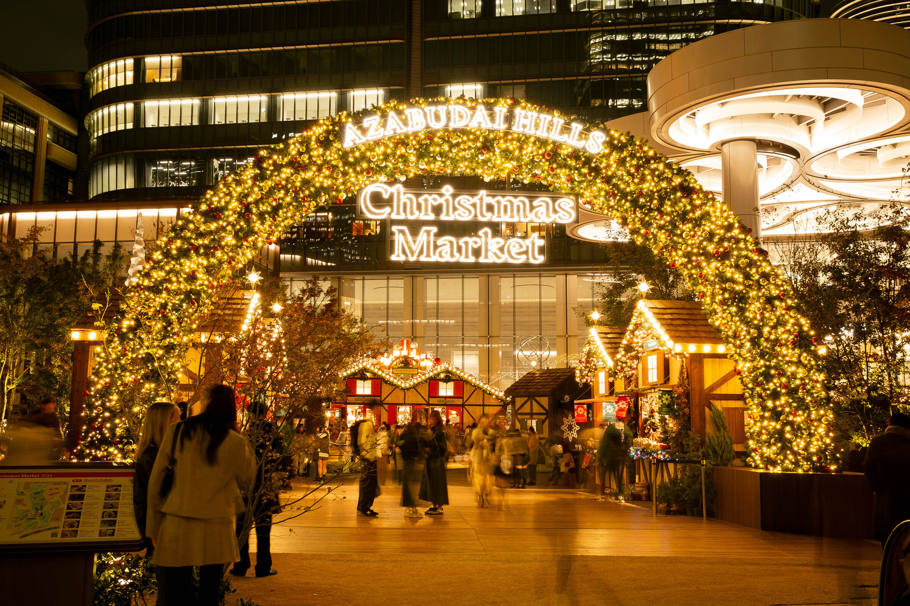

Events in Japan during the month of December
Christmas in Tokyo
Christmas is celebrated in Japan. They often display light shows during Christmastime.
- Tokyo Christmas Market 2025 - November 21-December 25. Features a 14m high Christmas tree with festive lights and many vendors.
- Osaka Mobility Show - December 5-7. Here they display vehicles and future vehicle prototypes.
- Sky Lantern Festival 2025 - November 8-December 13. 800 lanterns are released per night.